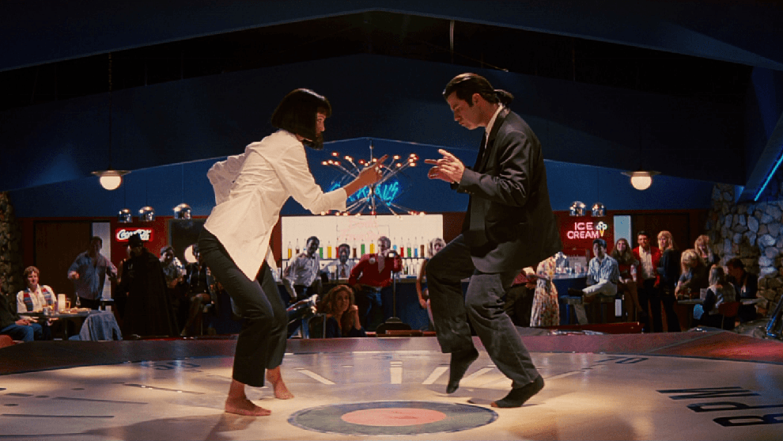

Pulp Fiction está narrada en un orden no cronológico y cuenta tres historias entrelazadas. La primera de ellas sigue al asesino a sueldo Vincent Vega mientras se ocupa de cuidar de Mia Wallace. El boxeador Butch Coolidge es el protagonista de la segunda y, finalmente, la tercera concierne al compañero de Vincent, Jules Winnfield. Las tres historias están relacionadas entre ellas para formar una intriga que ha sido descrita como "una trama por episodios, con acontecimientos circulares que tienen un principio y un final y en cuyos desarrollos se incluyen elementos y referencias a los otros episodios".
La película comienza por la mañana, en una cafetería de Los Ángeles donde se encuentra una pareja de jóvenes criminales, Pumpkin (a quien Jules llama Ringo) y Yolanda (llamada también Honey Bunny) (Tim Roth y Amanda Plummer). Ambos discuten acerca de los riesgos que comporta su actividad y, finalmente, se deciden a atracar la misma cafetería en la que están. Se produce entonces el primer corte en la película y comienzan los créditos iniciales al ritmo de Misirlou.
Mientras, en la cafetería, Vincent se retira un momento al baño, los dos jóvenes atracadores comienzan el asalto. Jules, como los otros clientes, le entrega su cartera a Pumpkin, pero este le ordena que abra el maletín. Cuando Jules lo abre, Pumpkin queda fascinado por lo que ve y Jules aprovecha el momento para agarrar su pistola y tomar el control de la situación. Yolanda apunta entonces a Jules, pero Vincent sale del baño a tiempo para apuntar a Yolanda, en una especie de duelo a la mexicana. Como primer acto de redención de su nueva vida, Jules pronuncia la célebre frase de Ezequiel y permite que Pumpkin y Yolanda se vayan con el dinero, simbólicamente comprando el perdón y la vida de los asaltantes, pero no les deja el maletín. Para finalizar, se ve a Vincent y Jules saliendo de la cafetería dispuestos a entregarle el maletín a Marsellus.